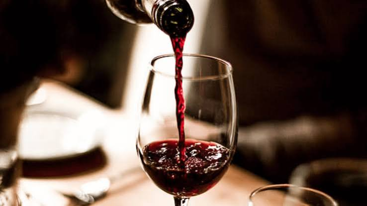
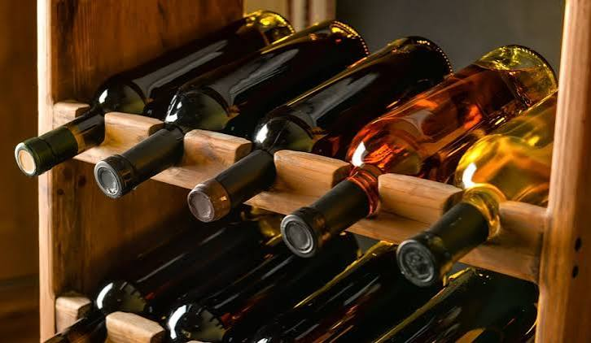
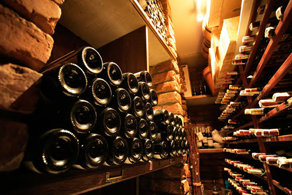
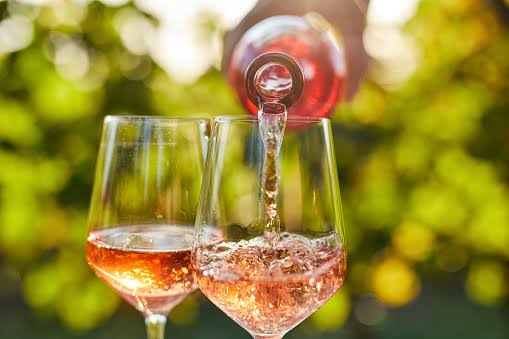

Vinhos Tintos
Intensos e cheios de personalidade, combinam com refeições especiais e momentos de celebração.
Uma tradição de mais de 15 anos
Explore aromas, sabores e tradições com a Vinheria Agnello. Encontre o vinho ideal para tornar cada momento especial.


Há mais de 15 anos, a Vinheria Agnello compartilha sua paixão pelo universo dos vinhos, construindo uma trajetória marcada pela tradição, qualidade e dedicação aos clientes.
Nossa seleção reúne rótulos nacionais e internacionais, valorizando diferentes uvas, regiões produtoras e vinícolas.
Mais do que oferecer vinhos, queremos proporcionar experiências e ajudar cada cliente a descobrir novos sabores.

Um bom vinho merece cuidados especiais. A conservação adequada ajuda a preservar seus aromas, sabores e características.
Por isso, é importante controlar a temperatura, evitar a exposição à luz excessiva e reduzir vibrações, especialmente no caso de vinhos raros e de maior valor.
Descubra diferentes estilos para acompanhar seus melhores momentos.

Intensos e cheios de personalidade, combinam com refeições especiais e momentos de celebração.
Aromáticos e refrescantes, são ótimas opções para acompanhar peixes, queijos e encontros especiais.

Delicados e versáteis, apresentam aromas frutados e combinam com diferentes ocasiões.